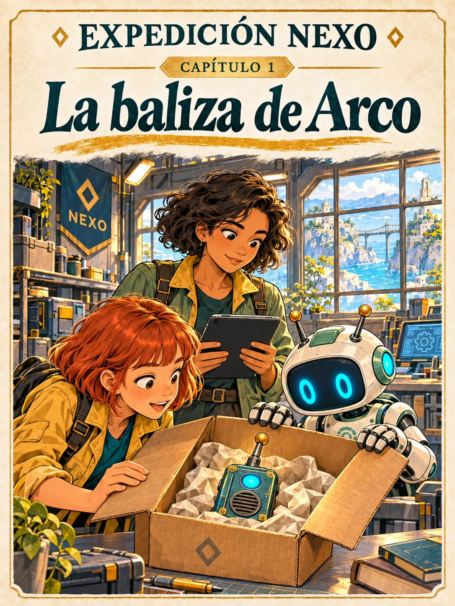
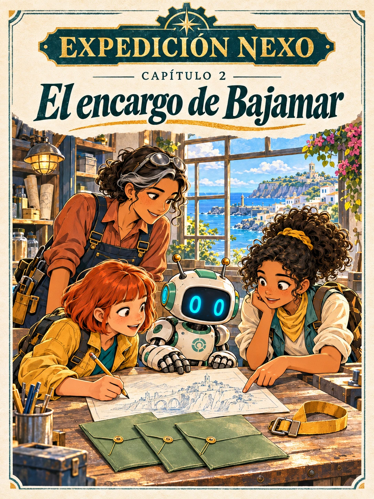

Tu biblioteca de aventuras
Cómic completo · PDF Capítulos 1 y 2 disponiblesCapítulos del cómic
Pulsa una tarjeta para leer. Las preguntas están justo debajo.
Capítulo 1

Capítulo 1La baliza de ArcoAbrir libro ↗
Capítulo 2

Capítulo 2El encargo de BajamarAbrir libro ↗
Capítulo 3Próximamente
Capítulo 4Próximamente
Capítulo 5Próximamente
Capítulo 6Próximamente
Capítulo 7Próximamente
Capítulo 8Próximamente